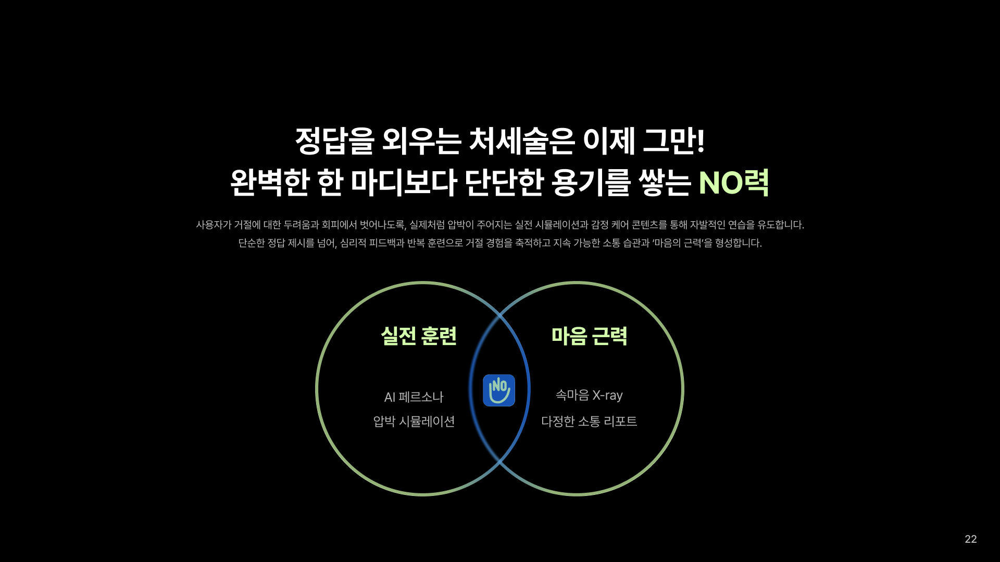

PROJECT
NO력
사회초년생을 위한 거절 연습 서비스를 기획하다.
- 진행 기간
- 2026.03 ~ 2026.06
- 팀 인원
- 3명
- 담당 역할
- 기획
DELIVERABLES
기획서와 화면설계서
NO력 화면설계 자료
PROBLEM & APPROACH
문제와 접근
문제 정의
부탁을 거절해야 할 때 관계가 나빠질까 걱정되어 자신의 의사를 표현하기 어려운 상황을 다뤘습니다.
연습 흐름 설계
팀 기획서는 AI 연습 상대를 정하고, 상황에 맞는 답변을 연습한 뒤 피드백을 확인하는 흐름을 핵심 경험으로 제시했습니다.
화면으로 구체화
온보딩과 연습 기록, 텍스트·음성 연습 화면을 설계했습니다. 주요 화면은 아래 미리보기에서 살펴볼 수 있습니다.
PREVIEW
프로젝트 미리보기
프로젝트 미리보기 1
프로젝트 미리보기 2
프로젝트 미리보기 3
프로젝트 미리보기 4
프로젝트 미리보기 5
프로젝트 미리보기 6
프로젝트 미리보기 7
STORYBOARD
화면설계서 미리보기
화면설계서 미리보기 1
화면설계서 미리보기 2
화면설계서 미리보기 3
화면설계서 미리보기 4
NEXT PROJECT